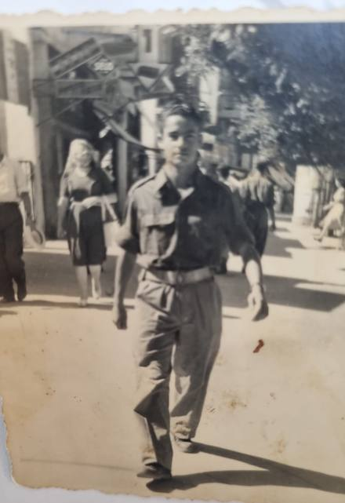
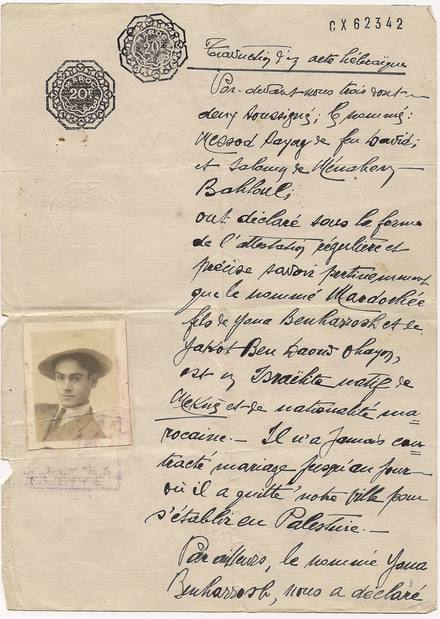
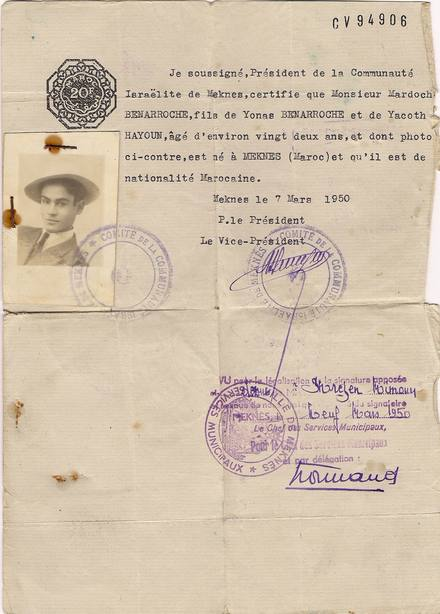
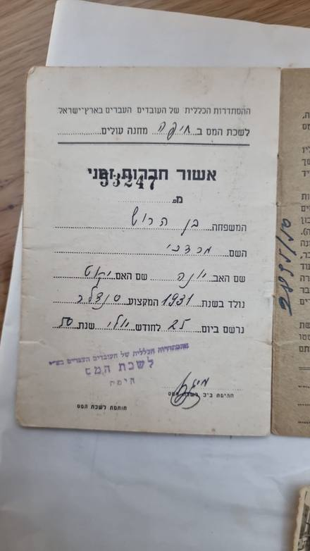
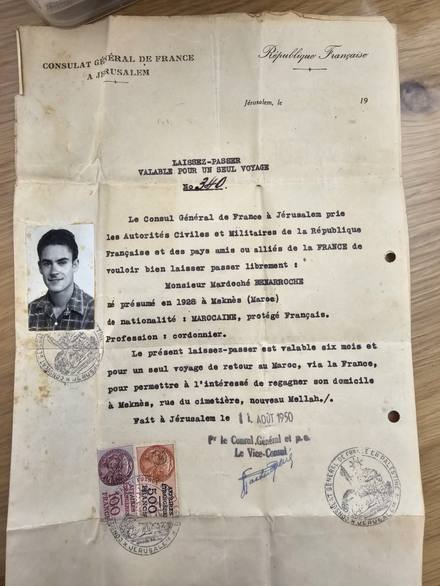
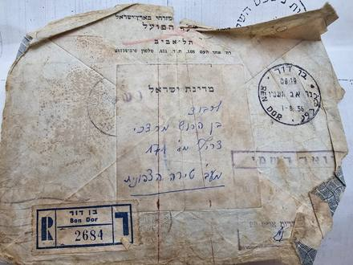
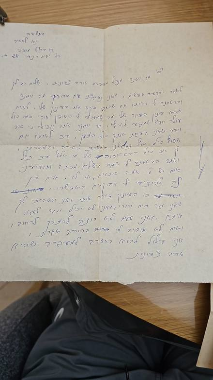
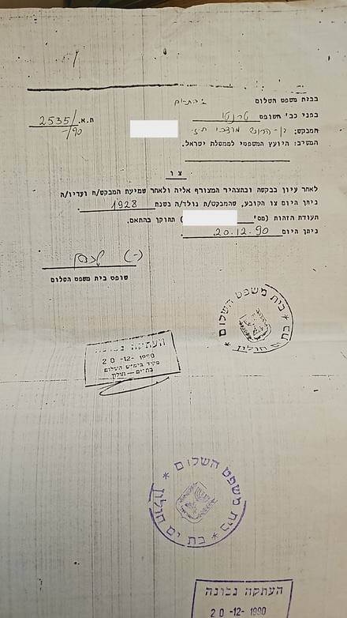

ידוע בוודאות מאומת
סולם הוודאות ומונחי המחקר — מה המילים האלה אומרות
עץ המשפחה
הסדר מימין לשמאל — הבכור מימין. שנות הלידה של יקוט, האחים שעלו ומרי — מרשימת העולים "ארצה", 11.6.1956; אסתר גם בפנקס אליאנס מכנאס 1953. שנת יונה: 1898 לפי המשפחה, 1912/1918 ברשימה (ספרה מוכה כפול). ניסים (מקסים), מרים ומיכאל מכלוף, חנה ויוני — לפי המשפחה בלבד (מסגרות מקווקוות). שנת לידתו של מרדכי — 1928 לפי צו בית משפט מ-1990 (תעודת הזהות עד אז: 1931; מסמכי מכנאס 1949–1950: "בן 22"); עזב את מכנאס רווק ולבדו (כתב העדות 1949). דוד אוחיון — מכתב העדות בלבד. הרישום במגדים 1954 — ככל הנראה שלו.
גלילה אופקית בתוך המסגרת מציגה את העץ במלואו, וכפתורי ההגדלה שמעליה מגדילים את הכתב; בהדפסה הוא מקבל עמוד לרוחב משלו.
פתיחת העץ בעמוד נפרד ↗ציר הזמן
כל אירוע מציין עד כמה הוא מבוסס, ומפנה אל המסמך שעליו הוא נשען.
- 1928מכנאס
נולד במכנאס, בנם של יונה בן הרוש ויקוט לבית אוחיון.
- 22.6.1949קיבוץ רשפים
הגיע ארצה בחבורת עולים מצפון אפריקה ונקלט בקיבוץ רשפים; לפי רשימת הקיבוץ יצא ממנו לצבא.
- 29.8.1949
מצולם בלבוש צבאי ברחוב עירוני; על גב התצלום הקדשה ביהודית-ערבית, חתומה "בן הרוש מרדכי". התצלום נשלח, לפי המשפחה, להוריו במרוקו.
- 24.10.1949מכנאס
במכנאס — אביו יונה מצהיר בפני בית הדין ששני עדים מכירים את בנו מרדכי, בן 22, ושמעולם לא נשא אישה "עד היום שבו עזב את עירנו להתיישב בפלשתינה".
- 7.3.1950מכנאס
ועד הקהילה היהודית במכנאס מנפיק לו תעודה עם תצלומו: מרדוך בנארוש, בן יונאס ויאקות חיון, כבן 22, יליד מכנאס.
- 25.7.1950חיפה
נרשם בלשכת המס של "מחנה עולים" בחיפה — המסמך הישראלי המוקדם ביותר שבידינו. מקצוע: סנדלר. שנת הלידה שנרשמה: 1931.
- 11.8.1950ירושלים
הקונסוליה הצרפתית בירושלים מנפיקה לו לסה-פסה לנסיעת חזרה אחת למרוקו דרך צרפת — "נולד, כמשוער, ב-1928", סנדלר, ביתו במכנאס ברחוב בית הקברות שבמלאח החדש.
- 1.7.1951
הקדשה בעברית על גב תצלום: "זאת תמונה אני והחברה של החבר שלי… וגם הוא מהעיר שלנו".
- 12.12.1954מושב מגדים
"בנערוש מרדושי" ממושב מגדים שבחוף הכרמל מקבל את השם "בן הרוש מרדכי". מרדושי הוא הכינוי שהמשפחה אישרה.
- 1.8.1956מעברת טירה
מכתב רשום מגיע אליו אל "צריף מס' 171, מעברת טירת הכרמל"; מעטפה שנייה מאותה שנה מוסיפה "מעברת טירה הצפונית, מחנה ד'".
- אחרי 8.1956
כותב בכתב ידו למנהל מעברת טירה בעניין דיור "בתור עולה חדש", ומזכיר את "המעברה שהיינו — טירה צפונית".
- שנות ה-50אילת
עבד כמה שנים בסולל בונה באילת.
- ספטמבר 1960תל אביב
נישא בתל אביב למרים לבית דהן, ילידת מכנאס 1939, שעלתה ארצה ב-1956.
- 20.12.1990בת ים
בית משפט השלום בבת ים קובע, על סמך תצהיר ועדים, שהמבקש נולד בשנת 1928, ומורה לתקן את תעודת הזהות.
- 2010
נפטר בישראל; קבור בבית העלמין ירקון.
המסמכים
לחיצה על תמונה פותחת את הסריקה המלאה; "בדוח" מוביל אל הקריאה המלאה של המסמך.








המקורות
כל קביעה בדף הזה נשענת על אחד המסמכים שלהלן. כל ערך מוביל אל אינדקס המקורות שבדוח, ושם — קישור אל הרשומה בארכיון שממנה נלקחה ואל עותק שמור שלה.
- תעודת ועד הקהילה היהודית במכנאס, 7.3.1950 — עם תצלומו
- כתב עדות עברי, מכנאס, 24.10.1949; תרגום צרפתי מאושר, 10.8.1950
- שתי הקדשות על גבי תצלומים — 29.8.1949 (חתומה) ו-1.7.1951
- ההסתדרות הכללית, לשכת המס חיפה — אישור חברות, 25.7.1950
- הקונסוליה הכללית של צרפת בירושלים — לסה-פסה מס' 340, 11.8.1950
- מעטפה רשומה, "בן דור", 1.8.1956 — הפועל המזרחי אל מעברת טירת הכרמל
- מכתב בכתב ידו אל מנהל מעברת טירה, אחרי אוגוסט 1956
- מעטפה רשומה, חיפה, 1956 — "מעברת טירה הצפונית, צריף 171, מחנה ד'"
- בית משפט השלום בת ים–חולון, ת.א. 2535/90 — צו מיום 20.12.1990
- ארכיון יד יערי — רשימות עולי קיבוץ רשפים, 19.9.1949
- ילקוט הפרסומים 407 (1955), עמ' 647 — שינוי שם, מושב מגדים
- פנקס בית הספר לבנות של אליאנס במכנאס, 1953 — אחותו אסתר
- ארכיון המדינה — רשימת העולים של "ארצה", 11.6.1956 — ההורים והאחים
- מסירות משפחתיות, ספטמבר 2026